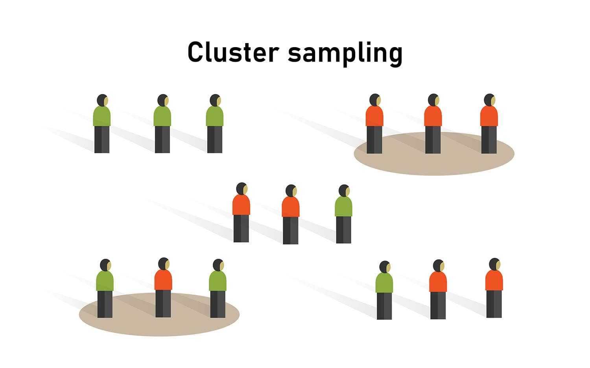
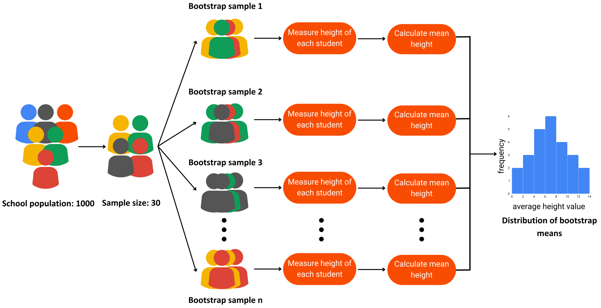

Population vs Sample
A population is the full group we want to understand.
A sample is a smaller, representative subset used to infer population behavior.
Sampling allows us to study a few to understand the many.
Why Not Measure Everyone?
Measuring every individual is often:
- Too expensive
- Too slow
- Logistically impossible
- Sometimes destructive
A properly selected sample provides reliable insight with far less effort.
Why Businesses Prefer Sampling
Sampling helps organizations:
- Reduce cost and effort
- Make faster decisions
- Handle large, continuous data streams
- Avoid unnecessary measurements
Sampling is a scientific tool, not a shortcut.
Risks of Sampling
Sampling introduces uncertainty because sample values rarely match population values.
- Larger samples reduce error
- Good design prevents bias
- Statistics helps quantify uncertainty
Types of Sampling
Two major families:
- Probability sampling: known chance of selection
- Non-probability sampling: selection probability unknown
We focus mainly on probability-based methods.
Simple Random Sampling
Every population member has an equal chance of selection.

Simple Random
Systematic Sampling | 1
Select every k-th member of a population list.
The sampling constant:
\[
k = \frac{N}{n}
\]
where
- N: population size
- n: sample size

Systematic
Systematic Sampling | 2
Systematic sampling is easier to implement than a pure random sample.
Risk:
If the population has a repeating pattern aligned with \(k\), bias may occur.
Fix:
Randomize the starting point before selecting every k-th observation.
Stratified Sampling | 1
Used when population subgroups differ in ways important to the analysis.
The population is divided into strata, and each stratum is sampled proportionally.
This prevents over- or under-representation, especially when natural differences exist (e.g., junior vs senior engineers).

Stratified
Stratified Sampling | 2
Example proportional allocation (sample size 200):
| Junior |
1200 |
40% |
80 |
\(0.40 \times 200\) |
| Mid-Level |
900 |
30% |
60 |
\(0.30 \times 200\) |
| Senior |
450 |
15% |
30 |
\(0.15 \times 200\) |
| Management |
450 |
15% |
30 |
\(0.15 \times 200\) |
| Total |
3000 |
100% |
200 |
— |
Cluster Sampling | 1
Cluster sampling divides the population into heterogeneous groups called clusters.
Instead of sampling individuals from the full list, entire clusters are selected, and data are collected from all units (or a subsample) inside each cluster.
Typical clusters: classrooms, neighborhoods, branch offices, cities.
Stratified vs Cluster
- Strata are homogeneous (e.g., only juniors).
- Clusters are mini-populations,
Cluster Sampling | 2
Cluser
Bootstrap Resampling
Resampling with replacement to estimate:
- Variability
- Standard errors
- Confidence around model metrics
Does not require strict distributional assumptions.
Bootstrap Resampling
Bootstrap
Probability Sampling Comparison
A visual summary comparing simple random, systematic, stratified, and cluster sampling.

Comparison
Non-Probability Sampling
Used when probability-based design is not possible.
- Convenience sampling: choose whoever is easiest to reach
- Internet polls: fast but biased
- Not reliable for inference or population estimates
Sampling Error vs Non-Sampling Error
Sampling Error:
Difference between sample statistic and true parameter:
\[
\text{Sampling Error} = \bar{x} - \mu
\]
Non-Sampling Error:
Survey bias, measurement mistakes, data entry errors, non-response issues.
Cannot be fixed by increasing sample size.
Finite Population Correction
When sampling more than 5% of a finite population:
\[
\sigma_{\bar{x}}
=
\frac{\sigma}{\sqrt{n}}
\sqrt{\frac{N - n}{N - 1}}
\]
Accounts for reduced variability when sampling without replacement.